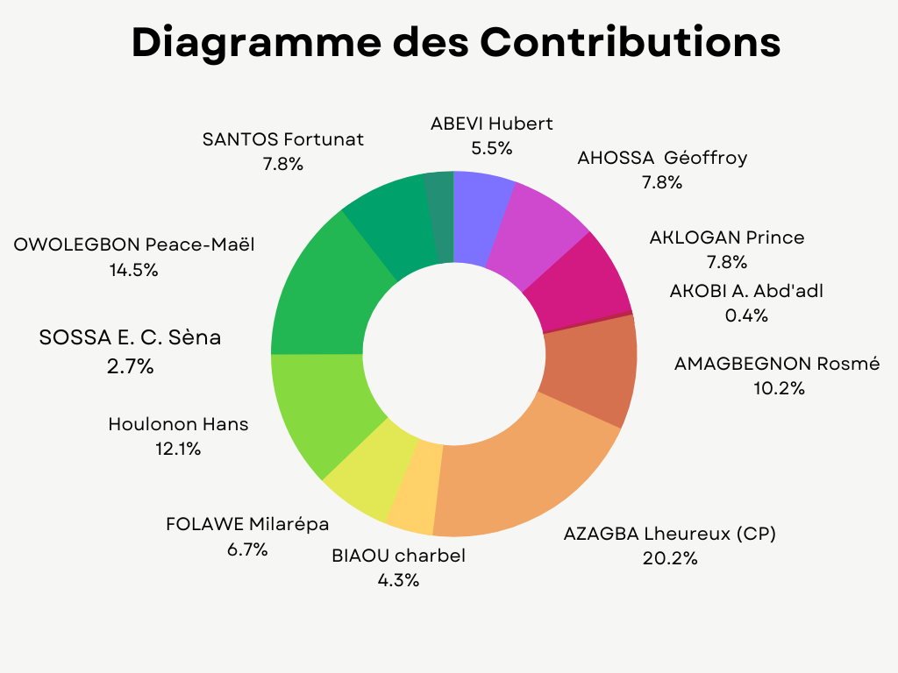

Le présent rapport décrit notre projet de réalisation d'une application web de gestion des emplois du temps pour l'Institut de Formation et de Recherche en Informatique (IFRI), durant l'année académique 2022-2023. Notre objectif principal était de développer une solution efficace et conviviale pour les étudiants et les coordonnateurs de formation, en leur permettant d'éditer et de consulter facilement les emplois du temps.
Notre application web de gestion des emplois du temps repose sur une architecture client-serveur. Elle comprend les modules suivants :
Nous avons choisi d'utiliser le framework Django en Python pour le développement de notre application web de gestion des emplois du temps. Django est un framework puissant et flexible qui facilite la création d'applications web robustes et évolutives. Python, quant à lui, est un langage de programmation populaire et polyvalent, qui offre de nombreuses fonctionnalités et une syntaxe simple et lisible.
Pour la gestion des données, nous avons opté pour MySQL comme système de gestion de base de données. MySQL est un système de base de données relationnelle fiable et performant, largement utilisé dans l'industrie. Nous avons conçu une structure de base de données relationnelle en utilisant les fonctionnalités offertes par MySQL, permettant ainsi de stocker et de gérer efficacement les informations relatives aux emplois du temps, aux enseignements, aux enseignants et aux salles de classe.
Afin d'organiser notre projet et de le rendre maintenable, nous avons adopté une structure modulaire. Notre projet Django est divisé en plusieurs modules, chacun ayant sa propre responsabilité. Voici un aperçu des modules principaux :
Cette structure modulaire facilite la maintenance, l'extension et la collaboration sur notre application. Chaque module est responsable d'une partie spécifique de l'application, ce qui rend le code plus lisible et plus facile à gérer.
Ainsi, en utilisant Django, MySQL et une structure modulaire, nous avons pu concevoir une application web de gestion des emplois du temps qui répond aux besoins des étudiants et des coordonnateurs de formation de manière efficace et conviviale.
Pour déployer notre application, veuillez suivre les instructions détaillées ci-dessous :
git clone https://github.com/votre-utilisateur/PIL1_2223_9.gitAssurez-vous d'avoir Git installé sur votre système pour pouvoir utiliser la commande de clonage.
python --versionSi Python est installé, vous verrez sa version s'afficher. Pour installer Django, utilisez la commande suivante :
pip install djangoCela installera Django et ses dépendances nécessaires.
python -m venv mon_environnement
source mon_environnement/bin/activateCela créera un nouvel environnement virtuel et l'activera.
cd PIL1_2223_9, puis exécutez la commande suivante pour installer les
dépendances :
pip install -r requirements.txtCela installera toutes les bibliothèques et les modules nécessaires pour exécuter l'application.
settings.py dans le répertoire PIL1_2223_9/projet et recherchez la
section de configuration de la base de données. Remplacez les paramètres par ceux correspondant à votre
environnement de base de données (par exemple, nom d'utilisateur, mot de passe, hôte, port).python manage.py migrateCela créera les tables nécessaires dans votre base de données.
python manage.py runserverLe serveur sera lancé et vous pourrez accéder à l'application localement à l'adresse
http://localhost:8000/.
http://localhost:8000/. Vous serez redirigé vers la page d'accueil de
l'application.En suivant ces étapes, vous serez en mesure de déployer et d'utiliser notre application sans aucun problème. Assurez-vous de suivre chaque étape avec attention pour garantir un déploiement réussi.
Un manuel d'utilisation détaillé est également disponible dans notre rapport de projet en HTML, qui est inclus dans le dépôt Github.
| Membre | Tâches |
|---|---|
| ABEVI Hubert |
|
| AHOSSA Mahounan Géoffroy |
|
| AKLOGAN Prince |
|
| AKOBI Adenigny Abd'adl |
|
| AMAGBEGNON Rosmé Essé |
|
| AZAGBA K. D. Lheureux (Chef de Projet) |
|
| BIAOU Charbel |
|
| FOLAWE Milarépa |
|
| Houlonon Hans |
|
| OWOLEGBON Noudohouénou Peace-Maël |
|
| SANTOS Fortunat |
|
| SOSSA Espoir Chavinelle Sèna |
|
Pour illustrer visuellement les données présentées précédemment, j'ai créé un diagramme sous forme d'image PNG :
Notre projet de gestion des emplois du temps pour l'IFRI a été réalisé avec succès. Nous avons développé une application web fonctionnelle qui répond aux besoins des étudiants et des coordonnateurs de formation. Nous avons respecté les délais et travaillé en collaboration pour atteindre nos objectifs communs. Le code source, le rapport de projet et la structure de la base de données sont disponibles dans le dépôt Github du groupe.
Nous tenons à remercier notre enseignant responsable, Ratheil Houndji, ainsi que nos enseignants impliqués et tuteurs, Armand Accrombessi et Pierre Jérôme Zohou, pour leur soutien et leurs conseils tout au long du projet.
Nous sommes fiers du travail accompli et espérons que notre application sera utile à la communauté estudiantine de l'IFRI.